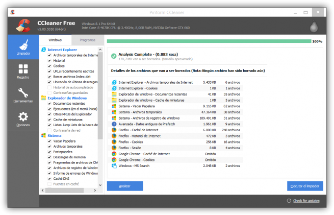
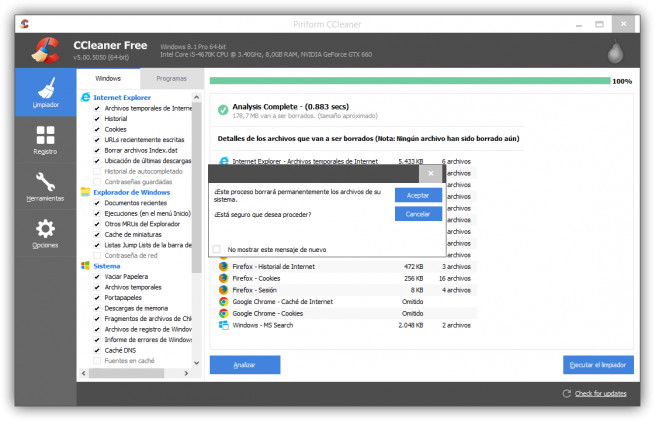
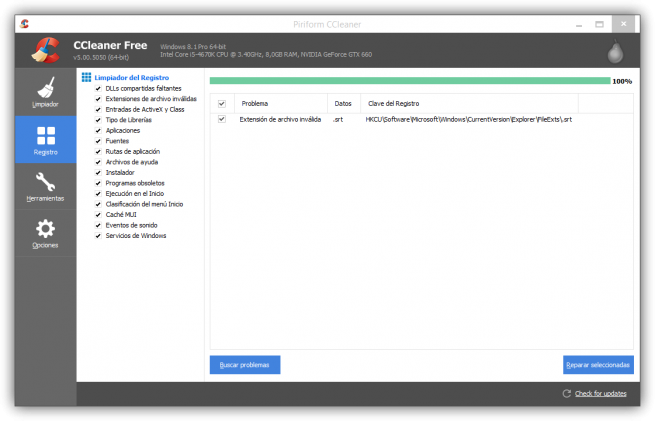
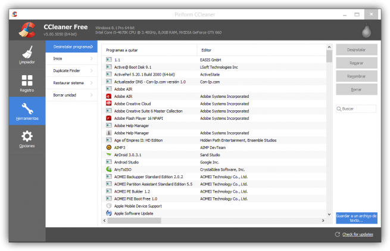
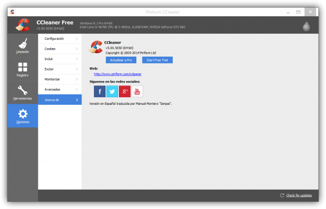

-Funcionamiento general CCleaner-
4 OPCIONES
-OPCION 1-
LIMPIADOR: al pulsar esta opción nos mostrara una ventana al lado con las pestañas de lo que va a escanear, la ventana se divide en dos (Windows y programas) Seleccionamos la opción que nos interese y pulsamos en analizar.

Una vez hecho el escaneo pulsaremos en: ejecutar el limpiador. Y aceptaremos en la ventana que nos muestra.

-OPCION 2-
REGISTRO: al pulsar en registro nos mostrara otra ventana con las opciones del escaneo que hará en el registro buscando las claves inválidas que haya, una vez seleccionadas las pestañas que creamos convenientes pulsamos en buscar problemas y dejamos que haga el escaneo.

Una vez terminado el escaneo pulsamos en reparar seleccionadas. Nos recomendara hacer una copia de seguridad del registro por si nuestro sistema se volviese inestable poder restaurarla. Personalmente creo recomendable hacer la copia de estar muy seguros de lo que va a borrar.
-OPCION 3-
HERRAMIENTAS: al pulsar esta opción nos mostrara dos opciones:
- Desinstalar programas: esta opción nos muestra todos los programas y actualizaciones que tenemos instalados.
- Inicio: borra entradas en el inicio del sistema para que no se ejecuten al iniciar el ordenador.
- Buscar archivos duplicados.
- Restaurar el sistema: Nos permite volver a un estado anterior del mismo.
- Borrar unidad: Nos permite borrar todos los datos de una unidad.

-OPCION 4-
OPCIONES: esta opción es la de configurar el programa:
- Configuración: configuración del programa.
- Cookies: borrar cookies o salvarlas.
- Incluir: incluir carpeta para escanear.
- Excluir: excluir carpeta de escanear.
- Monitorizar: Nos permite activar el análisis automático del sistema.
- Avanzadas: opciones avanzadas del programa.
